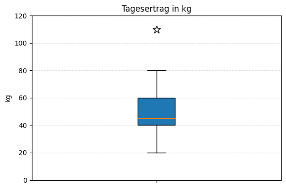
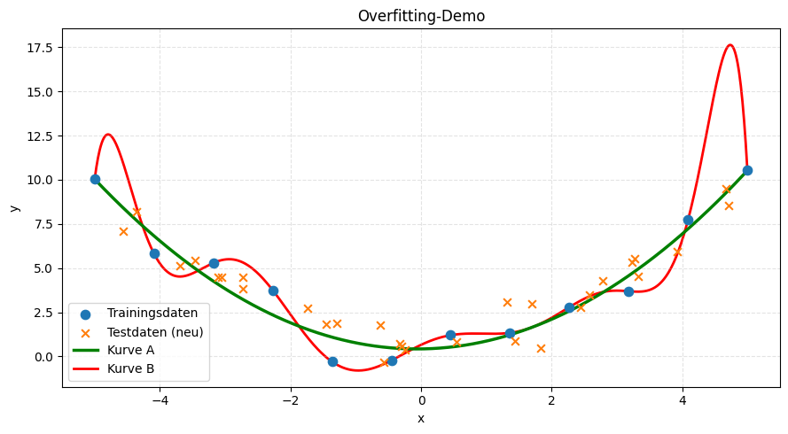

Fokus: Vertiefung, alternative Fragestellungen und Transferleistung.
Deckt Module A bis D ab.
Hilfsmittel: Taschenrechner
Zeit: 60 Minuten
* Erforderlich
AgriTech plant zwei neue Funktionen. Entscheiden Sie, welches Lernparadigma (Überwacht oder Unüberwacht) jeweils passender ist.
Bringen Sie die folgenden Schritte eines typischen Machine-Learning-Projekts in die logisch korrekte zeitliche Reihenfolge (1 = Start, 4 = Ende).

Ihre Rohdaten enthalten das Datum der Ernte (z.B. "2023-10-14"). Das ML-Modell kann mit dem Datum als String nichts anfangen. Sie wollen aber, dass das Modell saisonale Effekte (Herbst vs. Frühling) lernt.
Sie haben ein Modell trainiert, das den Ertrag (y in kg) basierend auf der Düngermenge (x in Liter) vorhersagt.
Die Gleichung lautet: y = 2,5 * x + 10

In der Bilderkennung von Unkraut setzen Sie ein "Deep Neural Network" ein. Was ist der funktionale Unterschied zu einem einfachen Entscheidungsbaum?
Ein Klassifikator soll entscheiden: "Reif zur Ernte" (Positive) oder "Noch warten" (Negative).
Ergebnis der Testphase:
| Vorhersage: Reif | Vorhersage: Warten | |
| Echt: Reif | 40 (TP) | 10 (FN) |
| Echt: Warten | 5 (FP) | 45 (TN) |
Ihr neuronales Netz sagt voraus: "Ernteausfall in 2 Wochen wahrscheinlich". Der Landwirt fragt: "Warum?". Das System kann keine Begründung liefern (Black Box).